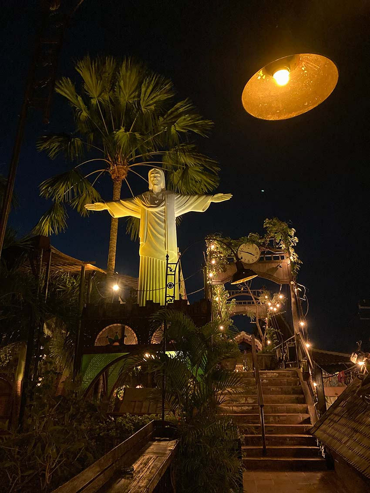

Contents
- Bali - October 2023
- Fiji - November 2023
- US/Mexico - December 2023
This is the year of traveling only with carry-on luggage. 100ml liquids and being as faithful to my 7kg allowance as I can. The sneaky 200g is just for the paperbacks that I pick up along the way - I think that's allowable.
Reads greedily absconded from our hotel in Uluwatu includes, "The House of New Begginings" by Lucy Diamond and "The First Dance" by Catherine Law. One that made it back with me, to faithfully return to a special friend, "All That I Am" by Anna Funder.
"Love Affair" by Leslie Kenton was also collected because it is a library book from the Brisbane City Council Library! Coincidentally, I will happen to be in Brisbane next week and intend to dutifully return it to the shelves. Watch this space.
Bali, October 2023
Aside from basking in the heat and humidity of Bali, a little highlight of this getaway was busting out “Happy Birthday” in Indonesian … in Indonesia! And blessedly joined by the delighted wait staff, presenting the slice of birthday cake.
A shout out to Mr Frost who perservered with a motley crew of high school students to make this happen. Frosty also taught us how to cook Nasi Goreng, which is one of the recipes that has stuck with me from childhood and was still addicted to whilst in Bali.
Activities
After a few leisurely days, reading by the pool and wandering the streets of Legian/Kuta for tasty eats and very generous massages, the last two days were for activities.
Paragliding
Taxiing on the back of a scooter (to get to paradling!) is so much fun. The organised chaos of the streets of Bali is astounding and the understanding between four and two wheels is remarkable.
Grab was confusing my intended destination so I settled on a location nearby, figuring that I could walk the rest of the way upon arrival. Thankfully a handpainted and craftily placed sign for “Nyang Nyang Paragliding” pointed us to the out-of-the-way port of call, and my driver awaited me to complete a flight and take me back!
I'm not sure how the pilot feels, but as a passenger I find paragliding so freeing and enjoyable. We didn't get up as high as I did in Fethiye, Turkey, but it was smooth sailing until the crash landing on the beach. Kidding, Mum!! A super safe and well planned landing.
I met another girl from the UK who was travelling South-East Asia for as long as her funds would allow. We grabbed a bite to eat in Uluwatu afterwards for a chin wag, before going our own ways.
Ubud
Driver Mr Nick taxied us to Ubud for the day, visiting temples, the Monkey Forest Ubud: Sacred Sanctuary and Tegalalang Rice Terrace and Waterfall.
The Monkey park was fun - a little forest haven to wander around and come across the varying monkey personalities. Some up for providing a show with a wrestle and chase up the trees, one gleefully having nicked a packet of chewing gum, with others mostly keen to just plonk themselves on the path, presenting their crown jewels with ease.
The rice terrace and waterfall were nice, but tourist "Insta-worthy" hostpots. At the rice field, there was a swing for ladies to wear a colourful dress and arrange a photoshoot, as well as a short, low speed zipline. At the waterfall there was a "beach club" with a killer DJ. I enjoyed the locations, but I'm sure there are numerous authentic locations to visit for a more traditional experience.
Scroll through the various monkey characters below >>>
Gastronomy appreciation
As a lazy cook, I am a standard meat and three veg kinda gal. Mostly just to fuel the tank to accommodate the various activities of my weekly schedule.
But my tastebuds were awakened in Bali. With thanks to travel buddy Kirrily, we always had a place to go. We happened to be at one temple, appreciating the shade after wandering the grounds in humid conditions, and it was suggested that perhaps we could relax and settle in to an early lunch.
“Oh, I know a place we can check out for some Babi Guling (suckling pig).”
Of course she did! After lurking around some hidden alley ways, we came across the delightful low-key joint and devoured a simple but savoury meat and rice dish, roasted over the fire and cooked to perfection.
Some places to save in your own Google maps app, just in case you happen to be there any time soon.
Barbacoa, Seminyak
Such tasty dishes at Barbacoa to share amongst the table, a tasteful arrangement, swift delivery of food and drinks, pleasant staff.
La Favela
Love the digs of La Favela, Seminyak. There is a separate bar for each of the spirits ie. one for vodka, gin, tequila, whiskey etc. and each segment holding up their own different, unique and quirky personality.
Motel Mexicola
Not quite a bang for your buck at Motel Mexicola, Seminyak. Good food and drinks, but quite pricey for Bali standards. Yet, I enjoyed the vibe, with some authentic Mexican music and bustling with people coming and going.
Fat Chow
Best Asian Fusion in Kuta is Fat Chow (and the best caramel espresso martini's).
Kopi Pot
Super chill, just grabbed a beer and some satay chicken sizzling over the coals at Kopi Pot. Enjoyed the shade and cool air under the trees.
Gelato
Venchi at the Kuta Beachwalk shopping centre. Just make sure that you enjoy it in the airconditioning! As soon as we stepped outside, the scoops started dripping furiously and we had to capture the goods as fast as possible. The flavours were very gentle with a super smooth texture, and very well presented.
Jimmy's Falafel
A sneaky shout out to Jimmy's Falafel just outside of Wynyard station, where we grabbed a late bite on pita bread, after landing and checking in to our hotel. Fun decor, very busy and a delicious bite to eat (with a tasty accompanying cocktail).
Keep an eye out for the adventures of Fiji and Mexico!